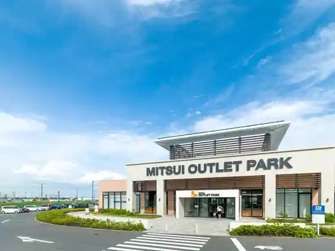
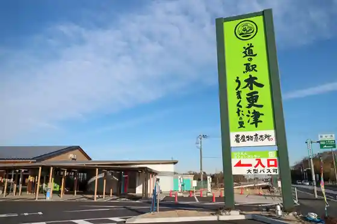
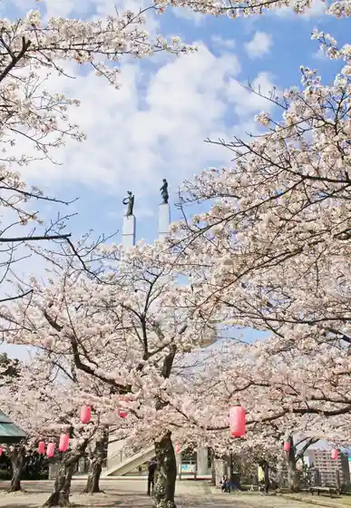
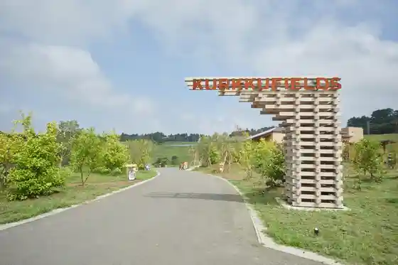

Umi Hotaru Parking Area
Kisarazu, Chiba · 0438-41-7401 · Official / source link
Mitsui Autoretto Park Kisarazu
Kisarazu, Chiba · 0438-38-6100 · Official / source link

Roadside Station Kisarazu Umakuta Village
Kisarazu, Chiba · 0438-53-7155 · Official / source link

Kimisarazu Tawa / Ota Yama Park
Kisarazu, Chiba · 0438-23-8467 · Official / source link

KURKKU FIELDS
Kisarazu, Chiba · 0438-53-8776 · Official / source link

Kisarazu Kanransha Park Kisarapia
Kisarazu, Chiba · 0438-38-5411 · Official / source link
Torii Saki Seaside Park
Kisarazu, Chiba · 0570-03-7100 · Official / source link
Egawa Coast
Kisarazu, Chiba · 0438-41-2234 · Official / source link
Porushie Ekusuperiensu Center Tokyo
Kisarazu, Chiba · 0120-718-911 · Official / source link
Yatsurugi Hachiman Shrine
Kisarazu, Chiba · 0438-23-8881 · Official / source link
Kisarazu CAMP ORGANIC FIELD in Mitate
Kisarazu, Chiba · 0438-38-5575 · Official / source link
Chiiba Kun Bussan Kan Umi Hotaru Mise
Kisarazu, Chiba · Official / source link
ETOWA KISARAZU (Etowa Kisarazu)
Kisarazu, Chiba · 0438-53-7086 · Official / source link
Hisatsu Kan Coast
Kisarazu, Chiba · 0438-41-2696 · Official / source link
Takakura Nosambutsu Chokubai Center
Kisarazu, Chiba · 0438-52-3388 · Official / source link
Nihonsei Tetsu (Kabu) Higashinihon Seitetsusho Kimitsu Chiku
Kisarazu, Chiba · 0439-50-2571 · Official / source link
Takakura Kannon (Takakura Tera)
Kisarazu, Chiba · 0438-52-2675 · Official / source link
Kazusa Aku
Kisarazu, Chiba · 0438-20-5111 · Official / source link
Chiiba Kun Plaza - Chibaken Kankojoho Kan
Kisarazu, Chiba · 0438-53-8262 · Official / source link
Kisarazu Coast
Kisarazu, Chiba · 0438-23-4545 · Official / source link
Kisarazu Kyodo Museum Kin no Suzu
Kisarazu, Chiba · 0438-23-0011 · Official / source link
Shosho Tera
Kisarazu, Chiba · 0438-22-7711 · Official / source link
Tourist Farm Bii Mai Berii
Kisarazu, Chiba · 080-7477-7787 · Official / source link
Kaneda Mitate Coast
Kisarazu, Chiba · 0438-41-0511 · Official / source link
Ushigome Coast
Kisarazu, Chiba · 0438-41-1341 · Official / source link
Koeki Zaidanhojin Kazusa DNA Kenkyusho
Kisarazu, Chiba · 0438-52-3930 · Official / source link
Komyo Tera
Kisarazu, Chiba · 0438-22-3603 · Official / source link
JA Kisarazu Seikatsu Kan Umakuta Mise
Kisarazu, Chiba · 0438-53-2486 · Official / source link
Indo Uota Farm
Kisarazu, Chiba · 0438-53-4632 · Official / source link
JA Kisarazu Seikatsu Kan
Kisarazu, Chiba · 0438-23-8022 · Official / source link